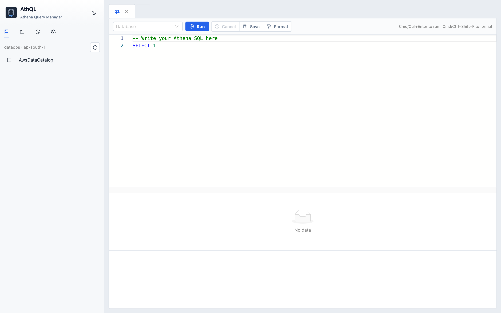

Catalog explorer
Lazy-load Glue catalogs, databases, tables, and columns. Click to insert into the editor.
A private, distraction-free SQL client built for developers. Speed up query loops, organize saved queries in tagged folders, and browse Glue catalogs instantly—running SQL directly from your laptop using your local AWS profiles.
I live in Athena for day-to-day data work. The AWS console is still the source of truth — AthQL doesn’t replace it. It adds a personal layer for segmentation and productivity when saved queries pile up and recent runs mix in everyone else’s SQL.
AthQL is the workspace I wanted on my laptop: my runs, my tags, my search, and my folders — not the whole org’s history in one list. Write with ChatGPT or Claude on one side, run and iterate here, download results, and save queries into groups that are actually easy to reuse next week.
It’s local-first on purpose. Our data is sensitive — I didn’t want SQL, saved
queries, or run history sitting with a third-party vendor. AthQL runs on your machine, uses
your AWS profile directly, and keeps organization metadata in ~/.athql/metadata.db.
No extra cloud backend to trust with what you’re querying.
Faster to write. Faster to rerun. Easier to keep organized — without handing your work to someone else.
Same Athena engine either way. AthQL is for how you organize and rerun your own work — not a claim that the console is worse overall.
| AWS console | AthQL | |
|---|---|---|
| Primary focus | Full AWS Athena access | Personal segmentation & reuse |
| Recent runs | Workgroup / org activity mixed in | Only queries you ran locally |
| Saved queries | Account-wide list; heavy at scale | Local folders, tags, fast search |
| Daily setup | AWS-hosted console tab | Localhost UI beside ChatGPT / Claude |
| Query execution | AWS Athena | AWS Athena — same engine & profile |
| Organization metadata | Stored in AWS console context | Local ~/.athql — not a 3rd-party SQL SaaS |
Metadata in ~/.athql/metadata.db. AWS calls use your configured profile and
region from config/athql.env.
Lazy-load Glue catalogs, databases, tables, and columns. Click to insert into the editor.
Multi-tab Monaco editor with table/column autocomplete from your catalog and FROM clause.
Async runs with polling, scan size, duration, cost estimate, and scrollable result preview.
Folders, tags, search, overwrite confirmation, and renameable tabs.
Pre-signed S3 URLs — full results download in the browser without loading into Python memory.
Dark and light UI. SQLite maintenance for history trim and vacuum.
Multi-tab editor, catalog sidebar, and database context in the toolbar.

Catalog tree, database picker, and SQL editor on first launch.

Result grid with scan stats, plus sidebar folders and tags.
"Staged on synthetic tables and mock datasets for demonstration—real production schemas stay securely locked down." 😂😅

Requires Python 3.9+, Node 20+, AWS credentials, and an Athena workgroup.
git clone https://github.com/Amit3200/AthQL.git cd AthQL cp config/athql.env.example config/athql.env # ATHQL_AWS_PROFILE, ATHQL_AWS_REGION, ATHQL_ATHENA_WORKGROUP
chmod +x scripts/dev.sh ./scripts/dev.sh # Backend → http://127.0.0.1:8000 # Frontend → http://localhost:5173
| ATHQL_AWS_PROFILE | Profile from ~/.aws/credentials |
|---|---|
| ATHQL_AWS_REGION | Region for Athena, Glue, and S3 |
| ATHQL_ATHENA_WORKGROUP | Workgroup name (commonly primary) |
| ATHQL_DEBUG | Set to 1 for verbose AWS error logs in the backend terminal |
Familiar Athena console flow, with local organization for saved SQL and history.
Toolbar dropdown; selection persists across page reloads.
Run via button or Cmd/Ctrl+Enter. Format with Cmd/Ctrl+Shift+F.
Folder + tags. Updates to existing saved queries require explicit overwrite confirmation.
Preview in the grid; download full CSV via pre-signed S3 URL.
| Run query | Cmd/Ctrl + Enter |
|---|---|
| Format SQL | Cmd/Ctrl + Shift + F |
| Rename tab | Double-click tab label |